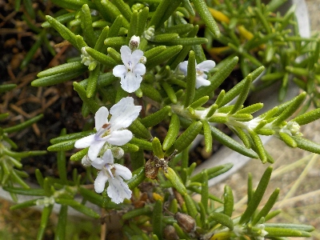
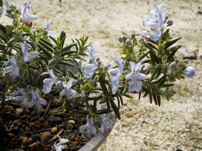
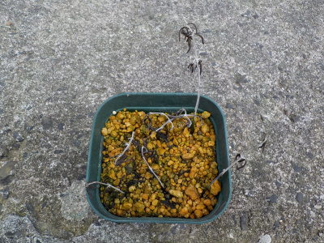
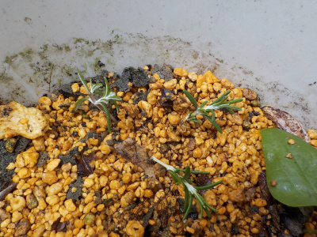
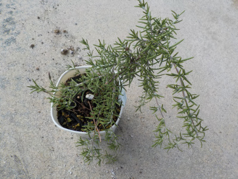
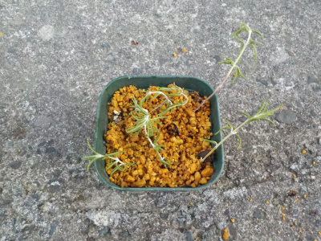

ローズマリーが咲いていました。
2024/06/16

花が咲いてるといいですね。
ニンニクを収穫したので、葉っぱを採ってニンニクと一緒に炒めました。
2024/06/16

花が咲いてるといいですね。
ニンニクを収穫したので、葉っぱを採ってニンニクと一緒に炒めました。
2024/02/25

秋ぐらいからずーっと花が咲いています。
花が小さいし白いのであまり目立たないですが、なかなかキレイです。
観賞用になりますね。
2023/08/27

適当に挿し芽すれば増えると思ってやりましたが、うまくいきませんでした。夏の暑さのせいかな？

またやりました。親株を小さくしたくないので、今回は小さいのを3つだけです。
2023/07/30

なんとなく欲しくなって入手したローズマリー。
料理に入れるといいらしいですが、実際どうなんでしょうね。色々試してみようと思っています。

枯れた時の予備に、だらんと下に伸びた枝を使って挿し木しました。
いらない葉っぱをちぎり取ったんですが、匂いが強かったです。料理に使うときはちょびっとで良さそう。
料理に使わなくても観賞用になると思っています。